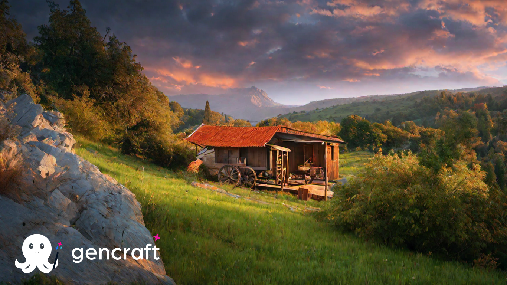

В Україні є багато гір, на які можна з'їздити на екскурсію.
Гора Говерла - найвища гора в Україні, розташована в Карпатах. Висота - 2061 метр над рівнем моря. На вершині Говерли є оглядовий
майданчик, звідки відкривається панорамний вид на Карпати.
«Памір» був не просто кількома куполами, а справжнім автономним військовим містечком, що мав на своїй території
пекарню, столову, спальні приміщення, бані, пральню та продовольчі склади – все, щоб якнайменше відволікати військових
від контактів із зовнішнім світом.
Етнографічні екскурсії.
Україна - це країна з багатою культурою і традиціями. Тут можна відвідати етнографічні музеї, сільські фестивалі, де можна дізнатися
про життя українців в минулому і сьогоденні. Найпопулярніші етнографічні музеї України: Музей народної архітектури і побуту України
в Пирогові, Національний музей-заповідник "Софія Київська", Музей історії міста Києва, Музей народної
архітектури і побуту
України в Переяславі-Хмельницькому, Музей народної архітектури і побуту України в Середньому Подніпров'ї.
Курортне лікування.
Україна має багато курортів з мінеральними джерелами, де можна покращити своє здоров'я. Найпопулярніші курорти для лікування в Україні: Трускавець, Моршин, Східниця, Поляна, Берегово, Яремче.
